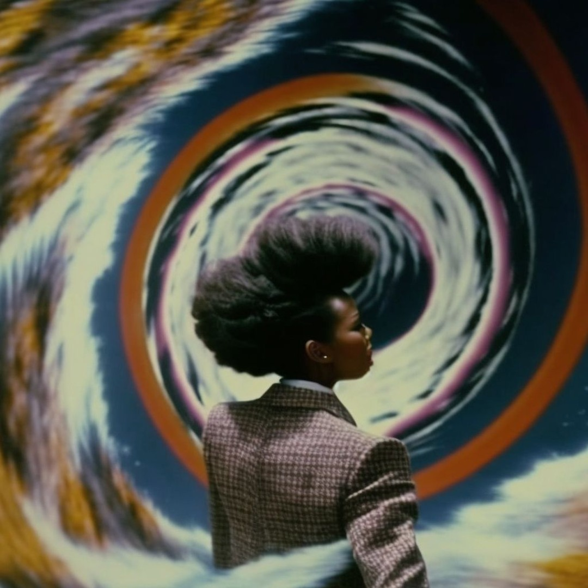

Optimizing digital interactions for clarity and engagement
Artist & Creative Technologist
Gallery

Projects
Solar Roots Co-op:
Community-powered renewable energy and food resilience.
Bridge Action Network:
Media, policy, and tech organizing for justice.
Shadow Spells for Resistance:
Art, ritual, and strategy fused.